What만 말하고 Why를 빠뜨리면 생기는 일
머릿속엔 만들고 싶은 게 분명한데, 채팅창 앞에 앉으면 어디서부터 설명할지 막막해요. 몇 줄 적어 보내면 엉뚱한 결과가 오고, 고쳐 달라는 요청을 몇 번 주고받다 토큰만 써요. 영상은 이게 프롬프트를 못 써서라기보다 대화 순서가 거꾸로 돼 있어서 생기는 문제라고 봐요. 그리고 그 해법으로 리버스 프롬프팅을 꺼내요.
What은 말하고 Why는 빠뜨려요
일할 때 What(뭘 만드느냐)보다 Why(왜 만드느냐)가 중요하다는 데엔 다들 동의해요. 그런데 실제로 이걸 의식하며 말하는 사람은 드물어요. 사람끼리도 "이것 좀 해 줘"처럼 What만 던지는데, 에이전트에게 Why까지 설명하는 사람은 더 드물죠. 슬라이드에서 What 카드에는 기능·화면·코드가, 주황색 Why 카드에는 목적·대상·목표가 붙어 있어요.
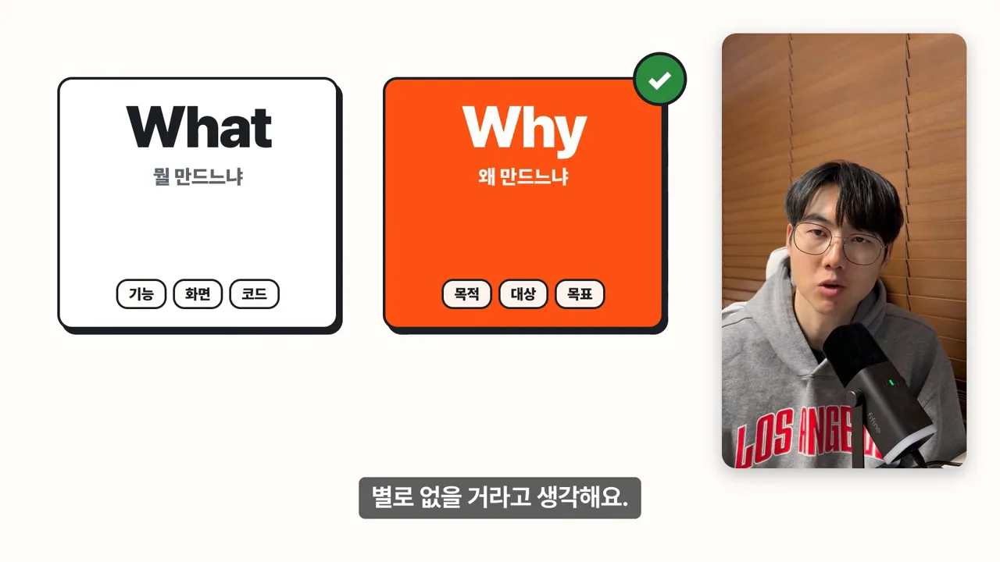
"발라트로 같은 게임 하나 만들어 줘"
레퍼런스 게임까지 집었으니 꽤 구체적인 요청처럼 보여요. 하지만 내가 왜 이걸 만들고 싶은지, 즉 상위 목표가 없어요. 화면의 세 카드가 같은 문장 뒤에 숨을 수 있는 목표예요. 혼자 한 판 해 보려는 것, 새 모델이 게임을 얼마나 잘 짜는지 테스트하려는 것, 실제로 출시해서 돈을 벌려는 것이에요.
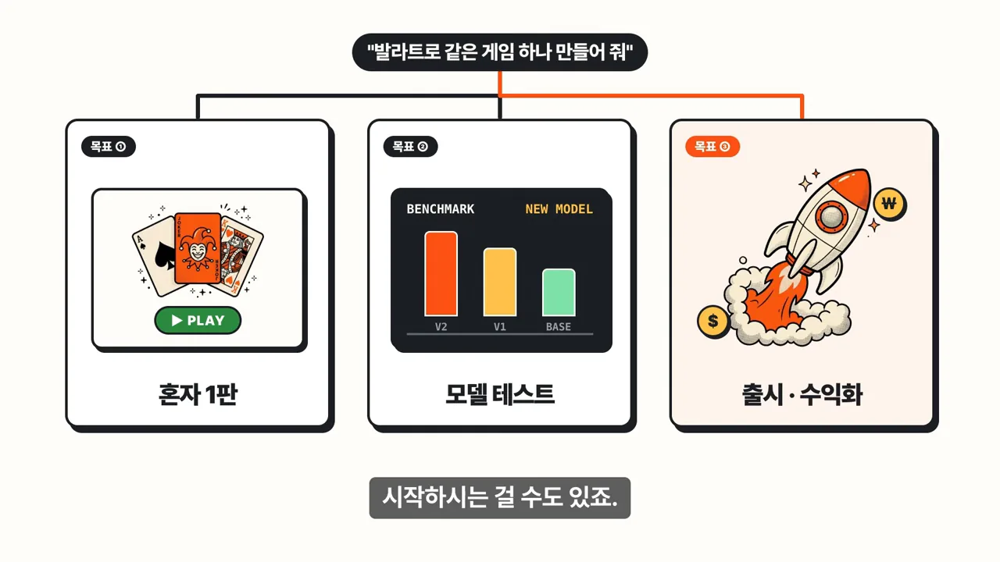
Why가 빠지면 AI는 빈칸을 묻기보다 자기 기준으로 때려 맞춰요. 운이 좋으면 한두 개 묻지만, 대부분은 그럴듯하다고 생각한 방향으로 빈칸을 채우고 바로 코드를 짜기 시작해요. 문제는 목표가 다르면 결과물도 완전히 달라야 한다는 거예요. 왼쪽 '혼자 테스트'는 index.html 파일 하나로 바로 돌아가면 충분해요. 오른쪽 '출시 목표'는 게임 엔진, 저장 구조, 밸런스 데이터, 배포 환경 네 칸을 처음부터 따로 설계해야 해요.
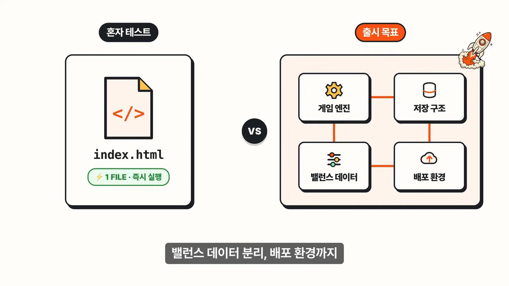
목표를 알면 중간 판단도 맞아요
상위 목표가 공유되면 작업 중간의 자잘한 선택도 의도에 가깝게 내려져요. 화면에서 주황 선은 Why 나침반을 향해 가고, '화면 범위'와 '예외 처리' 같은 갈림길마다 맞는 쪽에 체크가, 엇나간 쪽에 X가 붙어요. 아래 문구가 '방향 공유 → 의도에 맞게 자율 판단'이에요.
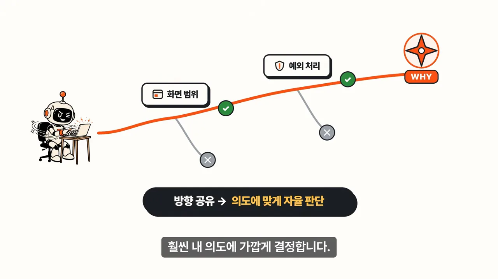
사람도 마찬가지예요. 배경과 목적을 아는 동료는 안 물어도 방향에 맞게 처리하지만, 시킨 것만 들은 동료는 엉뚱한 데 힘을 써요. 왼쪽 초록 카드(목적 공유)는 화살이 과녁으로 곧장 가고, 오른쪽 빨간 카드(Why 누락)는 AI가 꼬불꼬불 헤매요. 아래 막대가 그동안 쌓이는 토큰 낭비를 보여 줘요.
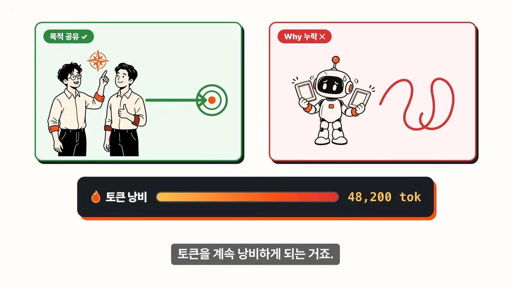
학계와 빅테크는 이미 AI에게 질문을 넘겼어요
"AI가 그렇게 똑똑하면 모호할 때 먼저 물어보면 되지 않나?" 영상은 이 물음에 논문 두 편과 빅테크 두 곳의 사례로 답해요. 결론은 한 방향이에요. AI는 알아서 잘 묻지 않으니, 질문하는 쪽을 AI로 바꿔 두라는 거예요.
AI는 모호한 걸 알면서도 묻지 않아요
코넬대 연구진이 2026년 5월에 낸 논문 'Knowing but Not Showing'(알고는 있는데 안 보여 준다)이에요. 여러 LLM(Large Language Model)에 모호한 질문을 주고 두 상황을 따로 봤어요. 왼쪽 초록 카드처럼 "이 요청 모호한가요?"라고 직접 물으면 모호하다는 걸 꽤 잘 알아채요. 오른쪽 빨간 카드처럼 "이거 해 줘"라고 평범하게 시키면 질문 없이 바로 추측해서 답해요.
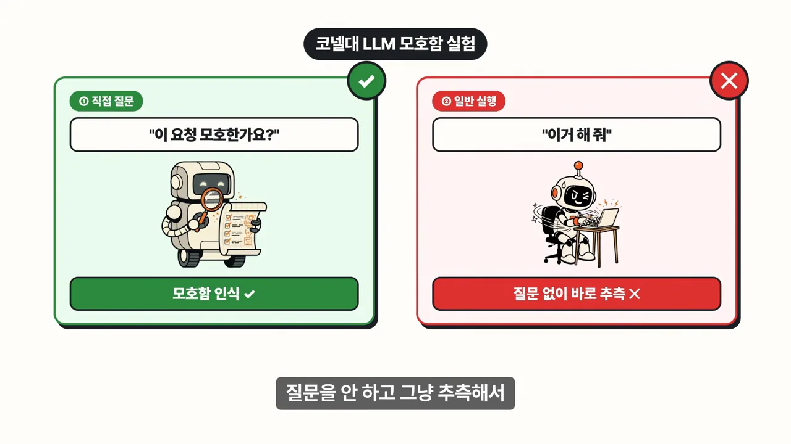
더 의외인 결과도 있어요. 프로젝트 파일이나 문서를 많이 넣으면 AI가 맥락을 더 잘 알 거라고 생각하잖아요. 그런데 왼쪽 막대처럼 코드, 기획 문서, 전체 맥락으로 참고 자료를 늘릴수록, 오른쪽 그래프처럼 확인 질문 비율은 오히려 떨어졌어요. 자료가 많을수록 '대충 이 뜻이겠지' 하고 바로 실행해 버리는 거예요.
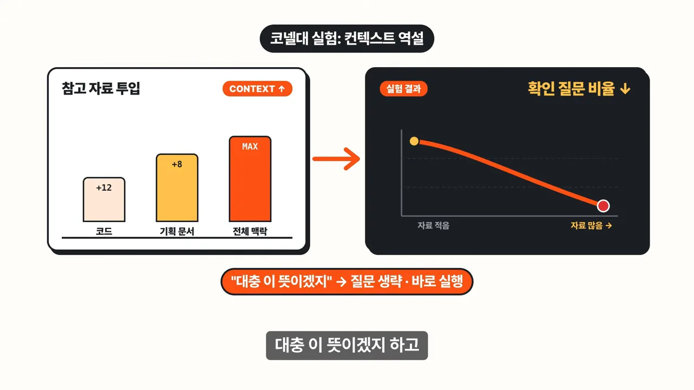
질문의 주도권을 뒤집는 패턴
학계는 몇 년 전에 이미 해법을 패턴으로 정리했어요. 밴더빌트대 줄스 화이트 교수 팀의 프롬프트 패턴 논문은 이를 역전 상호작용 패턴이라고 불러요. 소프트웨어 공학의 제어의 역전을 AI 대화에 적용한 거예요. 슬라이드 위 줄이 기존 흐름(사람이 지시 → AI가 추측해 답), 아래 주황 줄이 뒤집은 흐름(AI가 먼저 질문 → 사람이 선택)이에요.
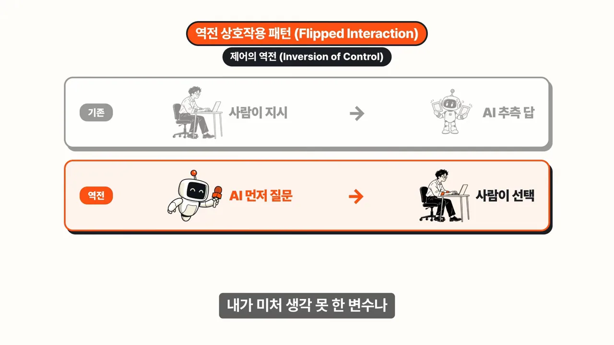
Anthropic과 OpenAI도 같은 방향이에요
Claude Code를 만드는 Anthropic은 모델이 작업 도중 멈춰서 객관식 질문을 던지는 전용 도구 AskUserQuestion을 만들었어요. 화면 예시는 "작업 전, 목표를 먼저 선택해 주세요"라는 질문에 '혼자 빠르게 테스트할 프로토타입', '실제 서비스 출시·배포 구조', '기존 프로젝트에 기능 추가' 세 선택지를 띄워요. 앞의 발라트로 예시에서 빠졌던 바로 그 Why를 묻는 질문이에요. 공식 모범 사례 문서도 코드를 짜기 전에 "스펙을 쓸 수 있을 때까지 나를 인터뷰해 줘"라고 먼저 시키라고 안내해요.
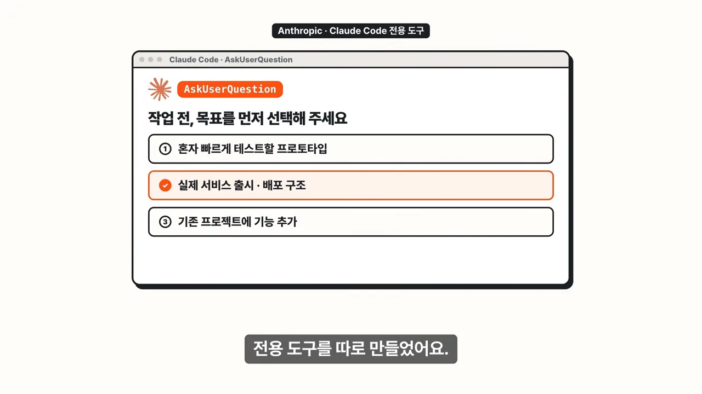
Anthropic이 2026년 2월에 낸 에이전트 세션 분석도 소개해요. 화면 속 막대그래프는 목표 복잡도별 확인 질문과 개입 비율이고, 맨 오른쪽 가장 복잡한 작업 막대에 테두리가 쳐져 있어요. 아래 주황 문구가 '복잡할수록 AI 먼저 질문 > 사람 개입 2배+'예요. OpenAI 코덱스도 공식 가이드에서 플랜 모드로 들어가 "나를 인터뷰하라"고 시키는 흐름을 기본 사용법으로 소개해요.
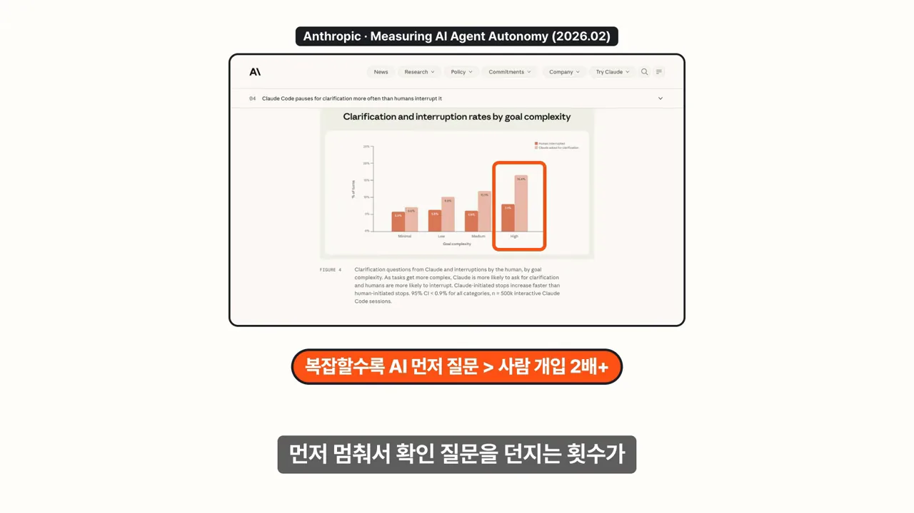
그래서 영상의 정의는 이래요. AI가 모호할 때 알아서 물어 주길 기대하지 말고, 처음부터 AI가 나에게 질문하도록 흐름을 뒤집어 두는 것이 리버스 프롬프팅이에요.
설명은 어렵고 반박은 쉬워요
리버스 프롬프팅이 가장 잘 먹히는 순간은 처음에 말한 그 상황이에요. 만들고 싶은 건 분명한데 말로 풀기가 어려울 때죠. 영상은 사람의 습성 하나로 그 이유를 설명해요.
컴본갤의 법칙
디시인사이드 컴퓨터 본체 갤러리에 "컴퓨터 견적 좀 맞춰 주세요"라고 올리면 댓글이 0개예요. 그런데 일부러 이상한 견적을 올리면 사람들이 득달같이 달려들어 고쳐 줘요. 화면 아래 주황 카드는 'RTX 5090 + 300W 파워'라는 말도 안 되는 조합에 댓글 99+가 달린 모습이에요.
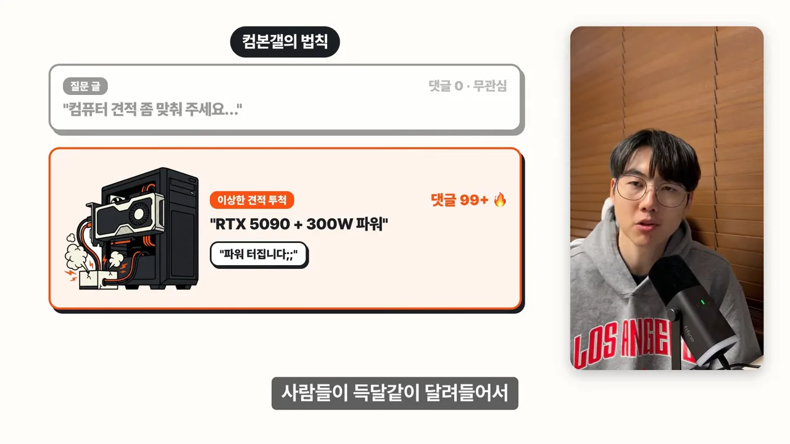
원리는 이 슬라이드가 정리해요. 위 회색 칸 '백지 상태에서 처음부터 설명'은 어렵고 귀찮아요. 아래 주황 칸 '가설 제시 후 틀린 추측 반박'은 즉시 고칠 수 있어요.
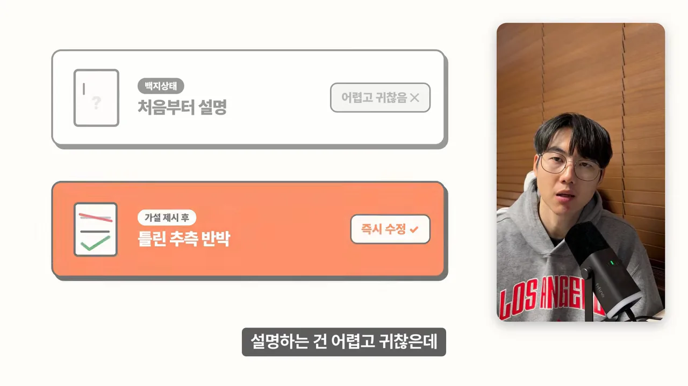
대시보드가 실험 리스트로 바뀌기까지
"지표 보는 대시보드 하나 만들어 줘"라고 그냥 시키면 AI는 바로 차트부터 깔아요. 리버스 프롬프팅이 걸려 있으면 AI가 먼저 추측을 던져요. "팀 미팅에서 같이 보려는 대시보드가 맞나요?" 그러면 아래 검은 말풍선처럼 반박이 바로 나와요. "아니요, 저 혼자 돌리는 실험들 안 까먹으려고 보는 거예요."
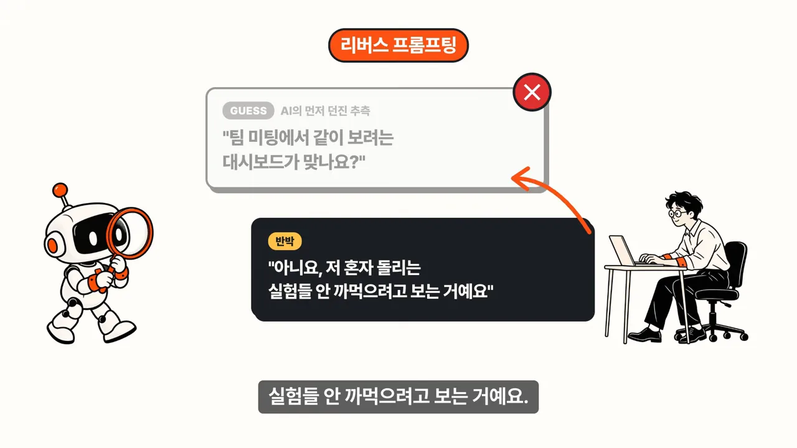
질문 하나 오갔을 뿐인데 결과물이 바뀌어요. 왼쪽 차트 대시보드에는 X가, 오른쪽 '간단한 실험 리스트'에는 체크가 붙어요. 리스트 안에는 프롬프트 A/B 테스트(완료), 컨텍스트 길이 실험(진행 중), 새 모델 속도 체크(예정)처럼 실험이 상태와 함께 줄지어 있어요.
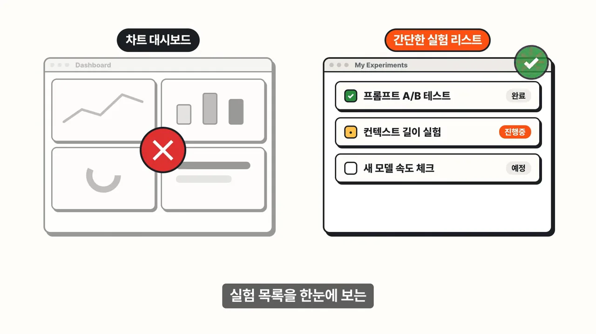
영상은 이 과정을 세 칸으로 줄여요. 'STEP 1 AI 가설', 'STEP 2 내 반박', 그리고 결과로 'Why'가 나와요. 억지로 정리해 설명하지 않아도, 반박하다 보면 머릿속 Why가 자연스럽게 튀어나와요.
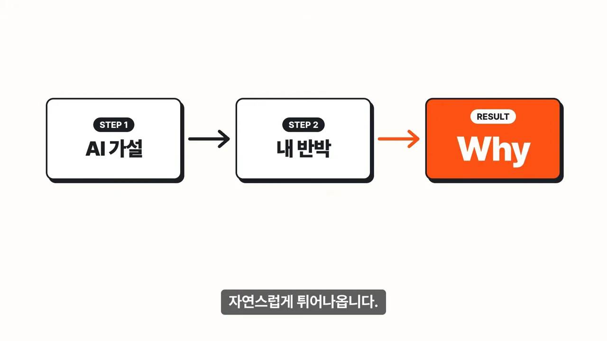
/interview-me 스킬과 세 가지 장치
매번 "질문해 줘"라고 쓰기 번거로우면 이 일을 대신해 주는 스킬을 깔면 돼요. 영상은 유명한 스킬 하나와 비교한 뒤, 오늘 주제에 맞는 스킬을 추천해요.
grill-me와 interview-me는 쓰는 때가 달라요
가장 많이 알려진 건 맷 포콕의 grill-me예요. 영상은 설치 수가 150만을 넘는다고 말하고, 화면의 skills.sh 페이지에는 1.6M로 나와요. 다만 지침을 파고들면 이미 세운 계획이나 설계안의 빈틈을 찌르는 스트레스 테스트에 가까워요. 그래서 영상은 설명조차 막막한 순간에는 에디 오스마니의 스킬을 추천해요. 지난 영상에서 다룬 Claude Code 팀의 그 에디 오스마니가 만든 /interview-me예요. 화면의 설치 수는 72.5K예요.
| 스킬 | 만든 사람 | 영상이 본 성격 | 잘 맞는 때 |
|---|---|---|---|
| grill-me | 맷 포콕 | 세워 둔 계획·설계안의 빈틈을 파고드는 스트레스 테스트 | 설계도가 이미 있을 때 |
| /interview-me | 에디 오스마니 | 머릿속 의도를 질문으로 끌어내는 인터뷰 | 뭘 원하는지 설명하기 막막할 때 |
설치는 간단해요. 쓰는 에이전트에게 깃허브 링크(github.com/addyosmani/agent-skills)를 주고 interview-me 스킬을 깔아 달라고 하면 돼요. 화면의 skills.sh 페이지 오른쪽 위에 설치 수 72.5K가 강조돼 있고, 아래에 'Addy Osmani · Claude Code 팀' 표시가 붙어 있어요.
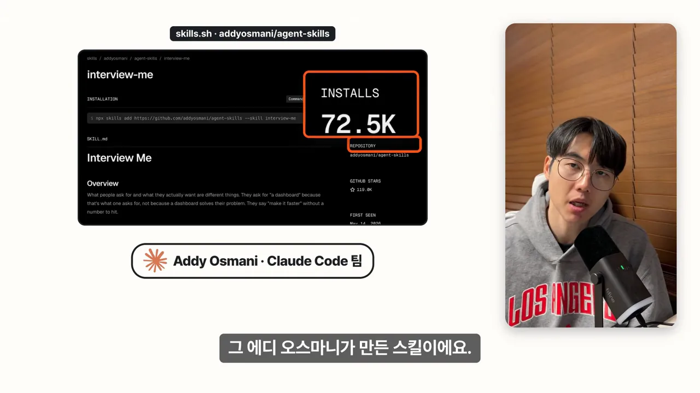
장치 1. 한 번에 질문 하나, 추측을 붙여서
질문 다섯 개를 한꺼번에 던지면 사람은 대충 훑고 넘겨요. 왼쪽 회색 카드 '질문 5개 투척'에는 '대충 훑고 넘기게 됨'이 붙어 있어요. 오른쪽 주황 카드는 질문 하나에 AI 추측("혼자 빠르게 써볼 용도 맞나요?")을 붙여서, '맞다 O / 아니다 X'로 바로 반응하게 해요.
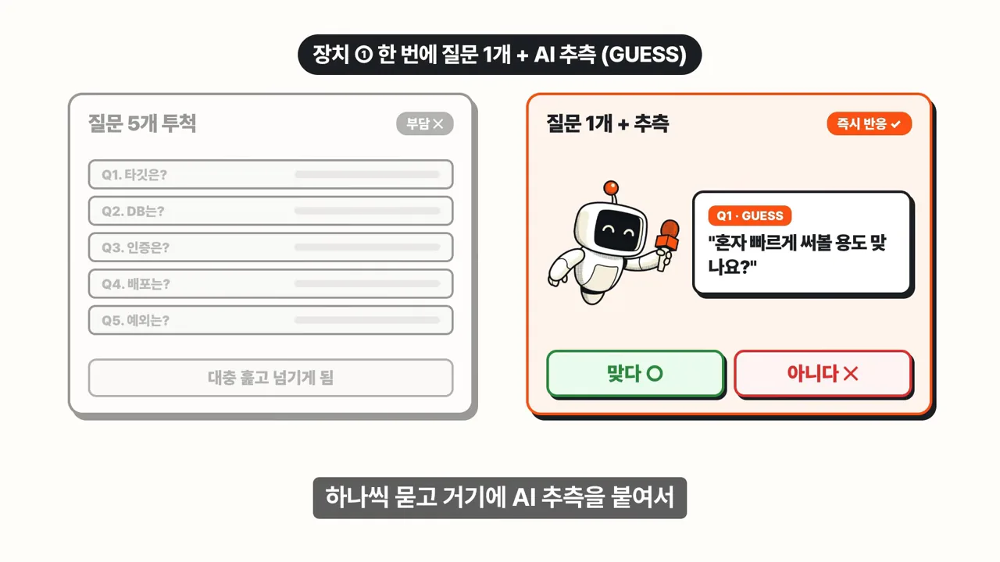
장치 2. 교과서적 모범 답안을 되물어요
AI와 이야기하다 보면 혼자 잠깐 쓸 툴인데도 "확장성 좋게 해 줘", "표준 아키텍처로" 같은 말이 습관처럼 나와요. 진짜 원해서가 아니라 왠지 그렇게 말해야 할 것 같아서죠. 이 스킬은 그런 말에서 STOP을 걸고 되물어요. 오른쪽 검은 카드의 질문이 그거예요. "그럴싸한 기준 빼고, 지금 진짜 필요한 건 뭔가요?"
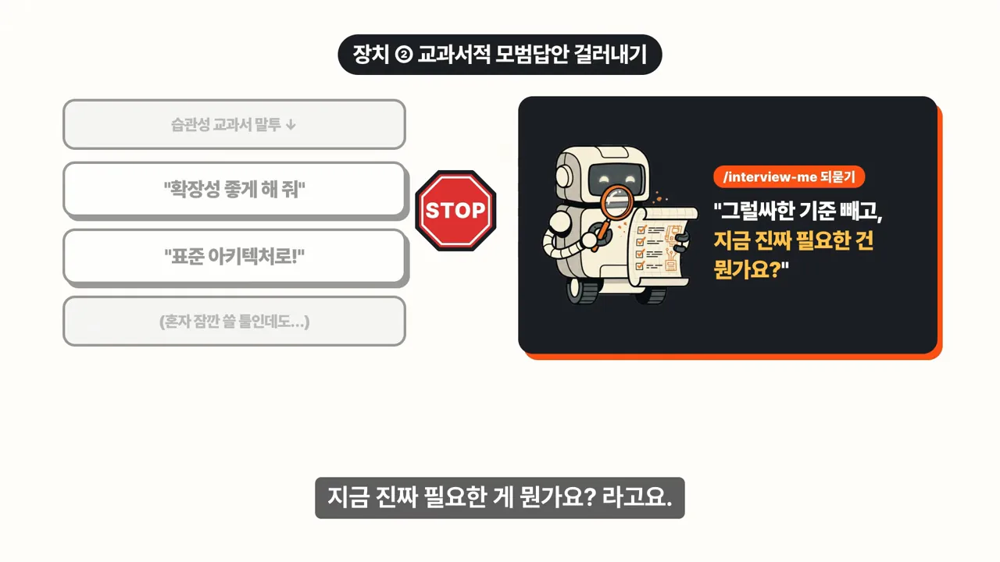
장치 3. 안 할 것까지 합의하고, 95%에서 멈춰요
인터뷰가 끝나면 할 것(핵심 Why, 최소 기능)과 안 할 것(안 만들 기능 명시)을 함께 요약해요. 영상은 AI와 결과가 어긋나는 절반이 '뭘 안 만들지'를 합의하지 않아서 생긴다고 말해요. 슬라이드의 '어긋남 50% 예방'이 그 뜻이에요. 사용자가 "알아서 해 줘"라고 해도 통과시키지 않아요. AI는 다음 질문 세 개에 대한 내 반응을 예측할 수 있는 95% 확신까지 묻고, 확정된 의도를 보여 준 뒤 턴을 멈춰요.

이미 쓰는 사람도 놓치는 세 가지와 원샷 세팅
이미 /interview-me나 비슷한 스킬을 쓰는 사람도 놓치기 쉬운 포인트가 셋 있어요. 셋을 이으면 '요청 → 인터뷰 → 의도 파일 → 새 세션에서 구현'이라는 한 흐름이 돼요.
flowchart TB A["Why가 빠진 요청"] --> B["하네스 규칙이 /interview-me 자동 실행"] B --> C["한 번에 하나씩 질문 + 추측"] C --> D["역질문으로 이해도 확인"] D --> E["Why · 안 할 것만 intent.md로 저장, 턴 멈춤"] E --> F["새 세션에서 파일만 읽고 구현"]
포인트 1. 스킬만 깔아 두면 안 켜져요
코넬대 논문에서 봤듯이 AI는 컨텍스트가 많을수록 알아서 묻지 않아요. 그래서 /interview-me를 깔아 둬도 직접 부르지 않으면 짐작으로 코드부터 짜기 쉬워요. 습관으로 만들려면 하네스에 규칙을 상시로 넣어 둬요. 화면에서는 CLAUDE.md와 AGENTS.md 옆 스위치가 켜져 있어요. 그 아래 규칙은 "Why·완료 기준 누락 시, 작업 전 반드시 /interview-me 먼저 실행!"이에요.

포인트 2. 인터뷰한 창에서 바로 구현하지 않아요
영상은 이게 Claude Code 공식 가이드도 권하는 방식이라고 말해요. interview-me 지침도 의도가 확정되면 파일로 저장할지 묻고 그 자리에서 턴을 멈추게 돼 있어요. 인터뷰를 몇 번 주고받은 창에는 초반의 틀린 추측과 버린 아이디어가 잡음으로 남아요. 왼쪽 회색 창이 그 오염된 인터뷰 창이에요. 가운데 주황 intent.md에는 Why와 Out of Scope만 담겨요. 오른쪽 초록 새 세션(Clean Context)은 확정된 Why만 깔끔하게 불러와요.

포인트 3. AI가 진짜 이해했는지 역질문으로 떠 봐요
/interview-me는 다음 질문 세 개의 반응을 예측할 수 있다고 판단하면, 즉 95% 확신이 들면 인터뷰를 끝내요. 하지만 AI가 다 이해했다고 혼자 착각했을 수도 있어요. 그래서 요약을 받으면 바로 넘어가지 말고 아직 얘기 안 한 선택지를 하나 던져 봐요. 화면의 역질문은 "데이터는 내 PC 로컬 저장? 아니면 서버 DB?"예요. Why를 이해한 AI라면 초록 카드처럼 "혼자 테스트용이니 로컬 저장이 맞습니다"라고 의도에 맞게 골라요.
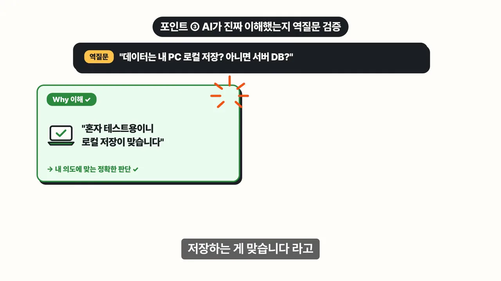
한 번에 세팅하는 프롬프트
세 가지를 하나씩 설정하긴 번거로우니, 영상은 에이전트 채팅창에 붙여 넣기만 하면 되는 프롬프트를 고정 댓글에 올려 뒀어요. 화면에는 요약본이 세 줄로 나와요. interview-me 설치, CLAUDE.md·AGENTS.md에 규칙 추가, 의도 확정 시 Why와 Out of scope를 파일로 저장하고 턴을 멈추는 거예요. 아래 세 체크가 결과예요. 자동 설치, 지침 파일 등록, Why 누락 시 자동 발동이 켜져요.
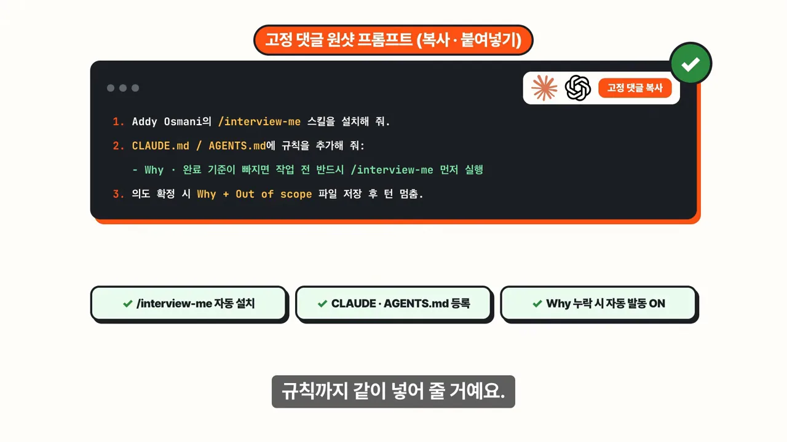
고정 댓글의 전문은 이래요. 화면 요약보다 규칙이 하나 더 있어요. 오타 수정, 단순 조회, 지시가 명확한 작업은 질문 없이 바로 하라는 줄이에요. 인터뷰를 거는 조건도 Why 하나가 아니라 Why·대상·완료 기준·제약 네 가지로 넓어요.
아래 작업을 순서대로 진행해 줘.
1. Addy Osmani의 `interview-me` 스킬을 설치해 줘.
(https://github.com/addyosmani/agent-skills / `interview-me`)
2. 내 글로벌/프로젝트 지침 파일(CLAUDE.md 또는 AGENTS.md)에 아래 규칙을 추가해 줘:
- 오타 수정, 단순 조회, 지시가 명확한 작업은 질문 없이 바로 수행한다.
- 요청에 상위 목표(Why), 대상(Who), 완료 기준(Success), 제약 조건(Constraint) 중 하나라도 빠져 있어서 방향이 달라질 수 있다면, 계획·코드 작성 전에 반드시 `interview-me` 스킬을 먼저 실행한다.
- 인터뷰로 의도가 확정되면 목표(Why)와 하지 않을 것(Out of scope)을 파일로 저장하고, 새 세션에서 깔끔하게 구현할 수 있도록 그 자리에서 턴을 멈춘다.이렇게 세팅해 두면 요청이 애매할 때마다 AI가 바로 작업하지 않고 Why부터 물어요. 영상의 마무리도 같아요. 결과가 어긋나는 건 What만 말하고 Why를 빠뜨렸기 때문이니, 완벽하게 설명하려 애쓰기보다 AI가 질문해서 맥락을 꺼내게 하는 리버스 프롬프팅을 하네스에 걸어 두라는 거예요.